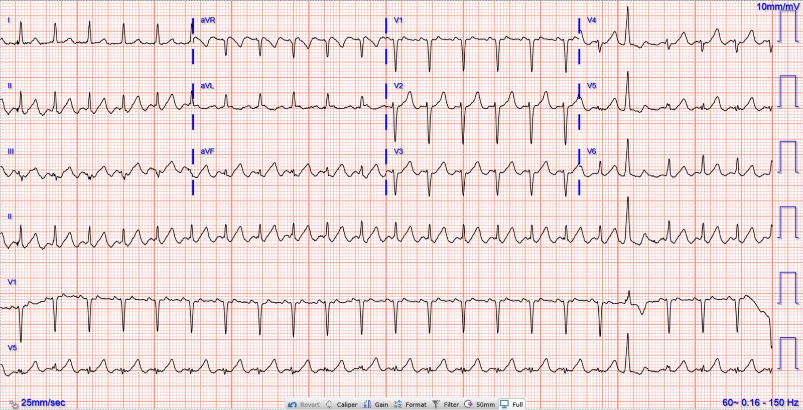
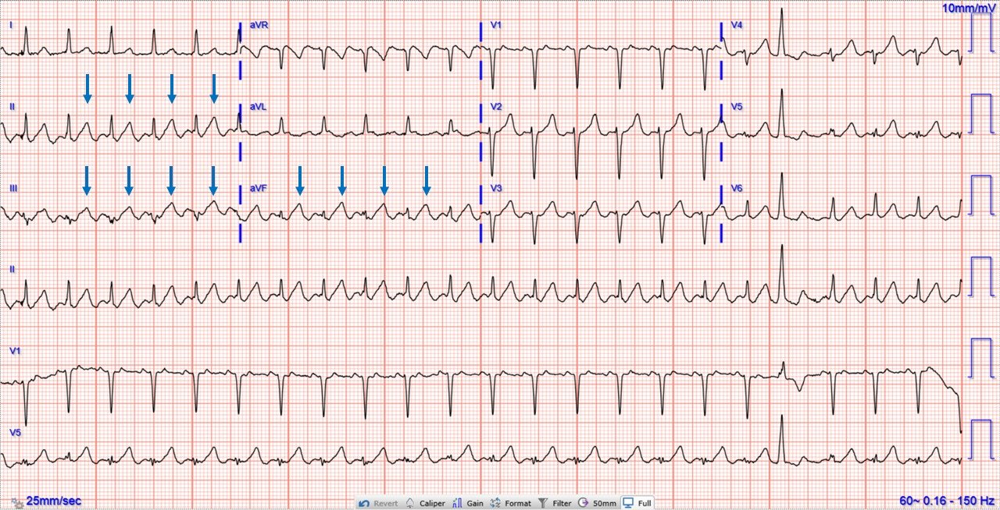
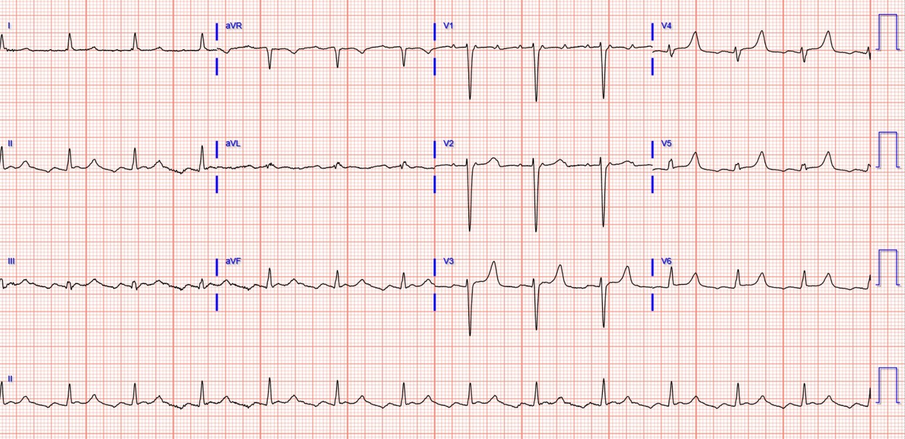
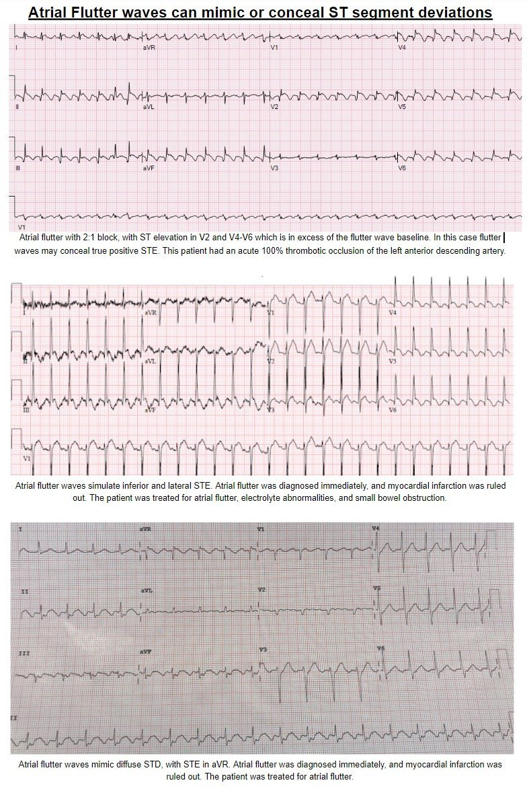
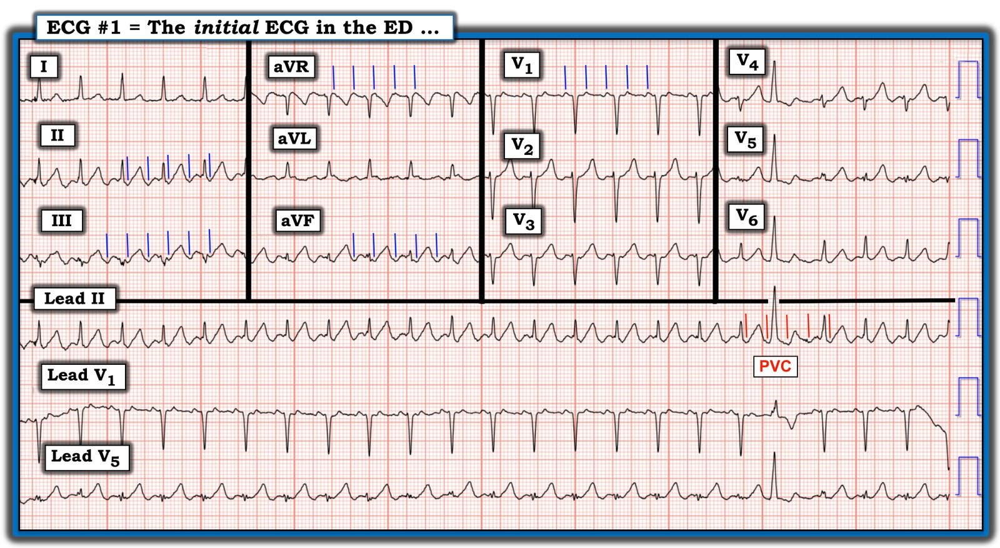

01/05/2023 — Một phụ nữ ngoài 60 tuổi với sóng T lớn. Đó là sóng T tối cấp, sóng T do tăng kali máu, hay điều gì khác?
Bản dịch tiếng Việt của bài "A woman in her 60s with large T-waves. Are they hyperacute, hyperkalemic, or something else?" – Dr. Smith’s ECG Blog. Giữ nguyên toàn bộ 7 hình ảnh của bản gốc.
Ca bệnh do Brandon Friedman M.D. viết, Meyers biên tập
Một phụ nữ ngoài 60 tuổi có tiền sử rung nhĩ mạn tính đang dùng Eliquis, bệnh thận giai đoạn cuối (ESRD) đang chạy thận nhân tạo, đái tháo đường típ II, tiền sử tai biến mạch máu não (CVA), tăng huyết áp và rối loạn lipid máu, đến khoa cấp cứu với nhiều than phiền sau khi bỏ lọc máu. Bà mô tả cảm giác mệt mỏi toàn thân, tiêu chảy, đau bụng bên phải, đau hai chân, phù hai chân và ngứa lan tỏa. Bà đã bỏ hai buổi lọc máu gần nhất, buổi lọc máu cuối cùng là một tuần trước khi đến viện. Khi đánh giá ban đầu, bà được ghi nhận có nhịp tim nhanh, vì vậy một điện tâm đồ được chỉ định và được trình bày dưới đây (không có điện tâm đồ cũ để so sánh):


Khi mới đánh giá điện tâm đồ này, các bác sĩ chăm sóc bà lập tức lo ngại về sóng T ở nhiều chuyển đạo, đặc biệt là các chuyển đạo thành dưới, nơi chúng có vẻ quá lớn so với phức bộ QRS của chúng. Họ đã cân nhắc đó là sóng T do tăng kali máu hoặc sóng T tối cấp (hyperacute).
Do bệnh nhân khai có bỏ lọc máu, điện thế cao của sóng T ban đầu làm dấy lên lo ngại tăng kali máu. Xét nghiệm khí máu tĩnh mạch (VBG) được chỉ định, cho kết quả kali bình thường là 4,9 mmol/L. Giá trị này sau đó được xác nhận là 5,0 mmol/L trên bộ điện giải đồ chính thức.
Vậy nếu sóng T điện thế cao không phải do tăng kali máu, thì điều gì khiến chúng lớn như vậy?
Giống như nhóm điều trị đã làm trong ca này, chúng ta hãy bắt đầu lại từ đầu và đọc toàn bộ điện tâm đồ một cách hệ thống, bắt đầu với nhịp.
Trước hết, chúng ta có một nhịp nhanh đều, QRS hẹp, tần số khoảng 135-140. Điều này thu hẹp chẩn đoán phân biệt của nhịp xuống còn nhịp nhanh xoang, nhịp nhanh kịch phát trên thất (PSVT, hay SVT) và cuồng nhĩ. Tiền sử của bệnh nhân đáng chú ý có rung nhĩ kịch phát, điều này làm tăng nghi ngờ lâm sàng về cuồng nhĩ, vì hai thực thể này thường cùng tồn tại trên một phổ. Xem kỹ hơn điện tâm đồ thấy các sóng nhĩ đều đặn ở nhiều chuyển đạo, với tần số đúng gấp đôi tần số của các phức bộ QRS. Đó là sóng cuồng nhĩ, và nhịp là cuồng nhĩ 2:1. Ngoài ra còn có một nhát đến sớm đơn độc, nhiều khả năng là PVC.
Ví dụ, chuyển đạo V1 nhìn chung phải có sóng P hai pha dạng lên-xuống trong nhịp xoang, nhưng trong ca này chúng có dạng xuống-lên (chủ yếu là lên), và do đó không thể là sóng P xoang. Chú ý vào các chuyển đạo II, III và aVF, các sóng cuồng nhĩ được đánh dấu bằng các mũi tên bên dưới. Các sóng cuồng nhĩ chồng lên sóng T, tạo nên đoạn dốc lên chậm, trát đậm, chân rộng của sóng T, cũng như làm điện thế của chúng có vẻ tăng lên. Hơn nữa, những thay đổi sóng T này chỉ thấy rõ ở một số chuyển đạo, và không thấy ở tất cả các chuyển đạo (chẳng hạn chuyển đạo I, nơi hầu như không thấy sóng cuồng nhĩ, chỉ còn lại các sóng T bình thường ở đó).


Bà được lọc máu cấp cứu vì quá tải thể tích, các triệu chứng lúc vào viện cải thiện. Bà cũng được dùng metoprolol tĩnh mạch để kiểm soát tần số, với hiệu quả tốt.
Đây là điện tâm đồ của bà sau khi kiểm soát tần số:


Hồ sơ cho thấy rung nhĩ/cuồng nhĩ mạn tính, và không thử kiểm soát nhịp trong lần nhập viện này.
Phác đồ kiểm soát tần số của bà được ổn định bằng carvedilol và diltiazem. Bà được xuất viện về nhà.
Những điểm cần học:
Cuồng nhĩ có thể rất khó nhận diện, và có thể gây ra đủ loại vấn đề như giả dạng hoặc che lấp thiếu máu cục bộ và OMI. Trong ca này, nó tạo ra cảm nhận về sóng T lớn, giả dạng sóng T tối cấp.
Xem các ca liên quan sau:
A 50 year old man with sudden altered mental status and inferior STE. Would you give lytics? Yes, but not because of the ECG! (Một người đàn ông năm mươi tuổi đột ngột rối loạn ý thức và ST chênh lên thành dưới. Bạn có cho thuốc tiêu sợi huyết không? Có, nhưng không phải vì điện tâm đồ!)
Quà đặc biệt đêm Giáng sinh!! Kích hoạt phòng thông tim trước viện: Bạn nghĩ sao? (Christmas Eve Special Gift!! Prehospital Cath Lab Activation: What do you think?)
ST chênh xuống lan tỏa kèm ST chênh lên ở aVR – nguyên nhân là gì? (Global ST depression with ST elevation in aVR – what is the cause?)
Đây có phải STEMI thành dưới không? (Is this inferor STEMI?)
Nhịp nhanh và ST chênh lên. (Tachycardia and ST Elevation.)
Cuồng nhĩ kèm STEMI thành dưới? (Atrial Flutter with Inferior STEMI?)
Cuồng nhĩ giả dạng ST chênh xuống (Atrial Flutter Mimicking ST Depression)
Chẩn đoán là gì? (What is the Diagnosis?)
ST chênh lên thành dưới-bên, nôn và troponin tăng (Inferolateral ST elevation, vomiting, and elevated troponin)



===================================
BÌNH LUẬN CỦA TÔI, bởi KEN GRAUER, MD (1/5/2023):
===================================
Theo kinh nghiệm của tôi — Cuồng nhĩ (AFlutter) cho đến nay là rối loạn nhịp tim hay bị bỏ sót nhất. Lý do của điều này rất dễ hiểu — hoạt động nhĩ thường không được thấy rõ trong nhiều trường hợp của rối loạn nhịp này. Và chính vì thế mà AFlutter đã không được nhận ra ngay từ đầu trong ca hôm nay.
- Tôi tập trung phần bình luận của mình vào một số gợi ý bổ sung cho phần bàn luận ở trên của Drs. Friedman và Meyers — với hy vọng giúp nhận diện dễ hơn rối loạn nhịp đôi khi rất khó nắm bắt này.
Với những ai muốn tìm hiểu thêm về “Quan điểm của tôi” trong việc nhận diện AFlutter — Xin hãy XEM:
- Bài đăng ngày 12 tháng Mười Một năm 2019 trên Dr. Smith’s ECG Blog — trong đó tôi đi qua cách tiếp cận từng bước với một ca AFlutter còn tinh tế hơn cả ca được trình bày hôm nay.
- Bình luận của tôi trong bài đăng ngày 6 tháng Ba năm 2020 — trong đó tôi ôn lại cách đánh giá hoạt động nhĩ (và khoảng RP’) trong các nhịp SVT vào lại.
Để cho rõ, ở Hình 1 — tôi đã sao lại bản ghi ban đầu của ca hôm nay, trong đó tôi đã đánh dấu hoạt động nhĩ ở 5 chuyển đạo MẤU CHỐT.


Áp dụng vào bản ghi Hôm nay:
Những cân nhắc sau đây có thể giúp tránh bỏ sót AFlutter:
- Giả sử bệnh nhân của bạn ổn định (và không cần sốc điện chuyển nhịp ngay) — thường xuyên dùng một cách tiếp cận hệ thống để đọc nhịp là cách TỐT NHẤT để không bỏ sót các dấu hiệu điện tâm đồ tinh tế (cũng như không-mấy-tinh-tế). Việc này không làm bạn chậm lại! Một khi hệ thống của bạn trở thành tự động — bạn sẽ thấy nó hỗ trợ vô giá! (Bạn cũng sẽ thấy cả tốc độ lẫn độ chính xác khi đọc rối loạn nhịp của mình đều tăng lên — vì bạn không phải liên tục quay đi quay lại lặp lại công sức của mình).
- Những ai theo dõi Dr. Smith’s ECG Blog đều biết tôi ưa dùng Hệ thống Ps, Qs, 3R để đọc nhịp. Ví dụ, ở Hình 1 — tôi mất chưa tới 5-10 giây để nhận ra rằng không có sóng P xoang bình thường (tức là không có sóng P dương một pha rõ ràng ở chuyển đạo II) — rằng QRS hẹp (do đó nhịp là nhịp trên thất) — rằng Rhythm (nhịp) là đều với Rate (tần số) ~135-140/phút — và rằng dù không có sóng P xoang “bình thường”, vẫn có một Relation (liên hệ) nào đó giữa hoạt động nhĩ và các phức bộ QRS kế cận (vì khoảng cách giữa các vạch XANH ở Hình 1 và các phức bộ QRS kế cận là hằng định!).
- Như vậy, nhờ Ps, Qs, 3Rs — tôi có thể chỉ trong vài giây xác định nhịp hôm nay là một SVT đều với tần số ~135-140/phút, nhưng không có bằng chứng rõ ràng về sóng P xoang. Biết rằng 90-95% các SVT đều gặp trong tình huống cấp cứu sẽ là 1 trong 4 thực thể — giúp đơn giản hóa nhiệm vụ xác định căn nguyên cụ thể của chúng ta. Chẩn đoán phân biệt gồm: i) Nhịp nhanh xoang; ii) Một nhịp SVT vào lại (tức là AVNRT, AVRT xuôi chiều); iii) Cuồng nhĩ (AFlutter) — hoặc — iv) Nhịp nhanh nhĩ (ATach).
- Việc biết rằng cho đến nay (!) — rối loạn nhịp hay bị bỏ sót nhất là AFlutter — khiến tôi luôn nghi ngờ khả năng này bất cứ khi nào nhịp trước mắt tôi là một SVT đều gần 150/phút, không có bằng chứng rõ ràng về sóng P xoang bình thường. Trong tình huống này — Hãy nghĩ tới AFlutter cho đến khi chứng minh được điều ngược lại (và khi đó bạn sẽ không bỏ sót chẩn đoán này)!
- Sai lầm PHỔ BIẾN NHẤT mà tôi từng thấy ngay cả các bác sĩ lâm sàng “giàu kinh nghiệm” mắc phải — cũng chính là sai lầm của các bác sĩ đầu tiên xem điện tâm đồ ban đầu của ca hôm nay. Họ đã “lo ngại sóng T quá lớn so với QRS” — mà không hề đề cập nhịp là gì! Cách tránh thiếu sót này rất đơn giản: Hãy tự hứa rằng với mỗi điện tâm đồ bạn gặp — bạn sẽ dành 2-đến-3 giây đầu tiên để con mắt đã được rèn luyện của mình nhìn từng nhát bóp trên (các) dải nhịp chuyển đạo dài ở cuối bản ghi nhằm bảo đảm rằng có sóng P dương ở chuyển đạo II với khoảng PR cố định trước mỗi phức bộ QRS — và không có “sóng lệch thừa” nào. Làm như vậy với Hình 1 — lẽ ra đã lập tức gợi ý rằng chuyển đạo II không có rõ sóng P xoang “bình thường” — và dường như có 2 sóng lệch nhĩ cho mỗi QRS ở chuyển đạo V1.
- Dùng compa đo giúp tiết kiệm thời gian — và — giúp bạn tinh tường hơn! Xin nhấn mạnh — tôi không chủ trương dùng compa đo khi bệnh nhân trước mặt bạn đang suy sụp nhanh vì một rối loạn nhịp nhanh. Trong những trường hợp đó — nhịp là gì không còn quan trọng nữa, vì cần sốc điện chuyển nhịp ngay lập tức bất kể nhịp rốt cuộc là gì! Nhưng thực sự tôi mất không quá 5-đến-10 giây để tìm sóng cuồng nhĩ bằng cách đặt compa đo đúng bằng một nửa khoảng R-R — và dò tìm ở các chuyển đạo then chốt xem có hoạt động nhĩ 2:1 hay không.
- Các chuyển đạo “ƯU TIÊN” của tôi để nhận diện hoạt động nhĩ là: i) Chuyển đạo II — thường là chuyển đạo TỐT NHẤT để nhận diện hoạt động nhĩ. Trong AFlutter — các chuyển đạo III và aVF cũng thường cho thấy ngay bằng chứng về hoạt động nhĩ 2:1; ii) Chuyển đạo V1 — Sau chuyển đạo II, theo kinh nghiệm của tôi chuyển đạo V1 thường là chuyển đạo tốt thứ 2 để nhận diện hoạt động nhĩ. Với AFlutter — người ta thường thấy ở chuyển đạo V1 này các sóng lệch dương tương tự như những gì các vạch XANH ở Hình 1 gợi ý; iii) Chuyển đạo aVR thường hữu ích đến bất ngờ trong việc nhận diện hoạt động nhĩ (các vạch XANH ở điện tâm đồ #1); và, iv) NẾU không chuyển đạo nào ở trên gợi ý hoạt động nhĩ — thì tôi sẽ rà soát 7 chuyển đạo còn lại để tìm hoạt động nhĩ. Dù vậy, AFlutter hầu như luôn cho thấy ngay bằng chứng về hoạt động nhĩ ở một hoặc nhiều chuyển đạo “ưu tiên” của tôi.
- Vì tần số thất ở điện tâm đồ #1 nằm trong khoảng 135-140/phút — và vì các vạch XANH ở Hình 1 cho thấy rõ có hoạt động AV 2:1 — nên tần số nhĩ ở điện tâm đồ #1 = 2 X 135-140 = 270-280/phút. Ngoài hình ảnh “răng cưa” ở từng chuyển đạo thành dưới — tần số nhĩ nhanh đến vậy nghiêng mạnh về chẩn đoán AFlutter (hơn là ATach)!
- Đối với ca hôm nay — Hãy biết rằng sóng cuồng nhĩ có thể lớn — và khi chúng lớn, sóng cuồng nhĩ có thể chồng lên sóng ST-T và giả dạng ST chênh lên hoặc sóng T nhọn (như trong ca hôm nay). Hãy nhận thức rằng cho đến khi tần số thất được kiểm soát — chúng ta sẽ không biết sóng ST-T “thật” trông như thế nào.
2 ĐIỂM THEN CHỐT Cuối Cùng (PEARLS):
- ĐIỂM THEN CHỐT (PEARL) #1: Với những rối loạn nhịp khó mà tôi không thấy được hoạt động nhĩ trong cơn nhịp nhanh — tôi tìm một “chỗ ngắt“ trong nhịp. Chúng ta thấy một “chỗ ngắt” như vậy ở Hình 1, do PVC tạo ra. Các vạch ĐỎ ngay trước và sau PVC này — cho thấy các sóng cuồng nhĩ đều đặn vẫn tiếp diễn (và được thấy rõ hơn, ít nhất ở chuyển đạo II) trước và sau PVC làm thiết lập lại nhịp thất, so với phần còn lại của dải nhịp chuyển đạo II dài.
- ĐIỂM THEN CHỐT (PEARL) #2: Đôi khi — hoạt động nhĩ có thể không dễ thấy ở một bệnh nhân rối loạn nhịp nhanh có ổn định huyết động. Trong những trường hợp đó — dùng một hệ thống chuyển đạo thay thế, chẳng hạn Chuyển đạo Lewis có thể làm nổi rõ hoạt động nhĩ và giúp xác định nhịp dễ hơn. Hình 2 trình bày cách dùng chuyển đạo Lewis. Bài đăng ngày 20 tháng Ba năm 2018 trên Dr. Smith’s ECG Blog minh họa việc áp dụng chuyển đạo Lewis ở một bệnh nhân có nhịp SVT đều.